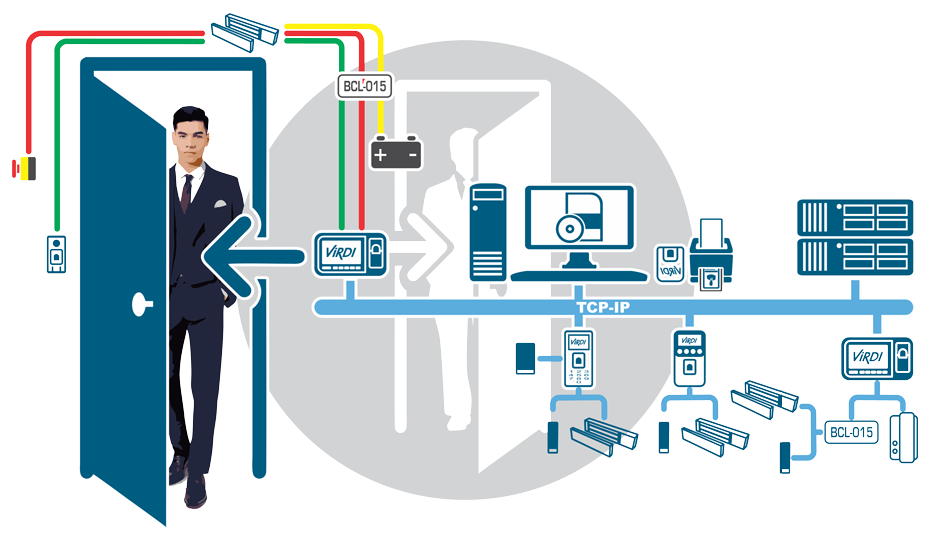

<<<<<<< HEAD

TODO EN ACCESOS
=======
ESTA ES LA NUEVA CABECERA
>>>>>>> f351a573291a95a7d2164e63f386724789a7e75c
Tu block de Confianza
Este es el titulo atractivo e interesante del post
Y este es el parrafo de inicio donde vamos a explicar las cosas increibles que se pueden hacer con ramas
los blogs son la mejor forma de compartir informacion y tus ideas. Mucho mas que ir a conferencias o salir en youtube. Excepto si eres un rockstar. Pero estadisticamente no lo eres.... por ahora.